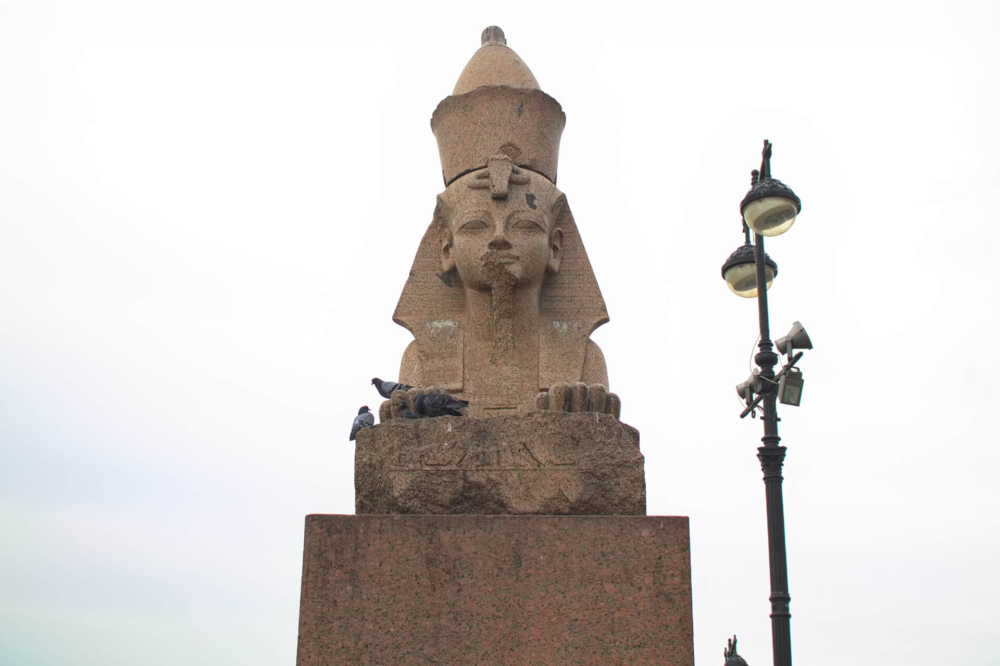
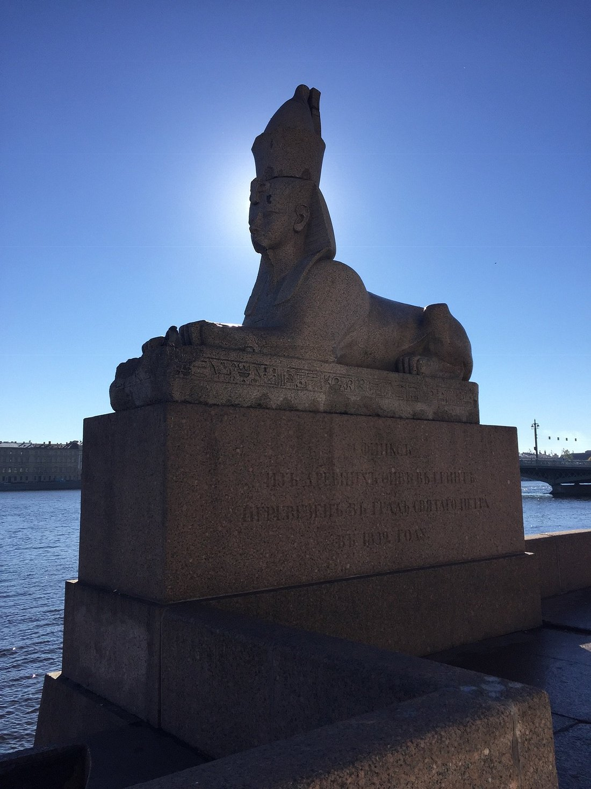
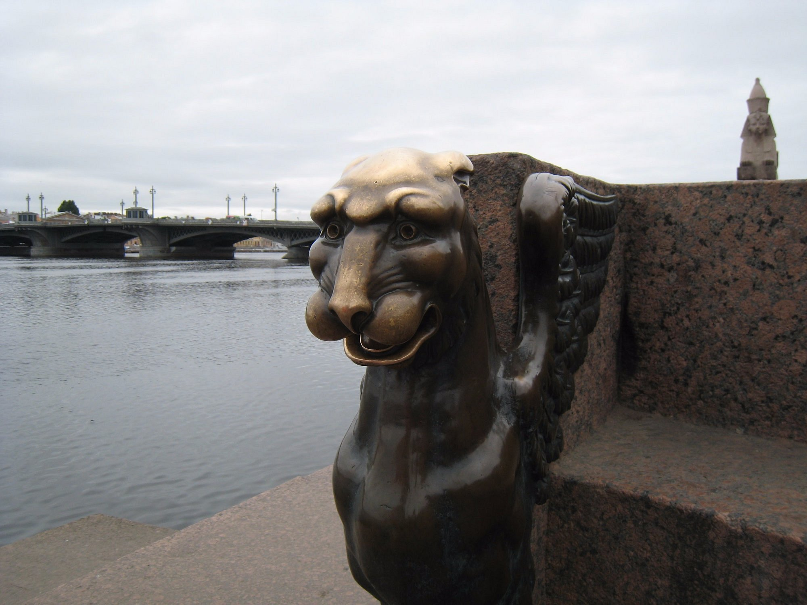
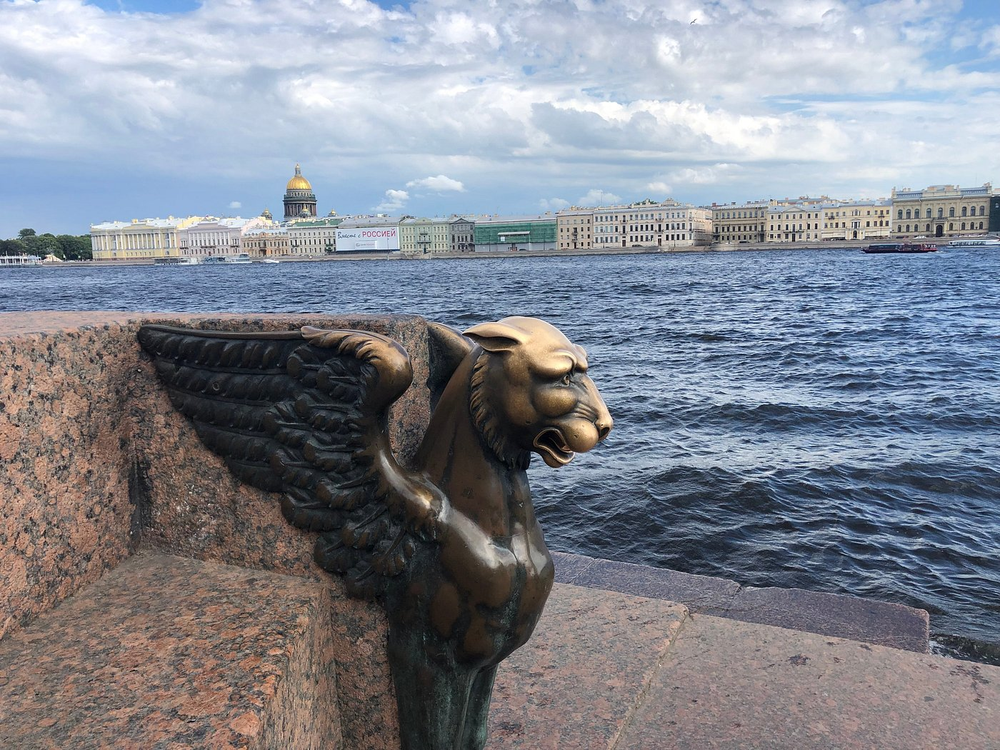

Сфинксы на Университетской набережной

Легенда
Одна из самых распространенных легенд гласит, что нельзя смотреть сфинксам в глаза на рассвете и на закате. Считается, что в эти моменты статуи могут подчинить человека своей воле, привести к душевным расстройствам, странным видениям или даже самоубийству.

По другой легенде, сфинксы могут менять выражение своего лица в течение дня. Утром, когда первые лучи солнца скользят по граниту, они кажутся почти доброжелательными. К вечеру, когда тени становятся длиннее, а свет — холоднее, взгляд тяжелеет, губы сжимаются, а в складках камня проступает что-то угрожающее.
К сфинксам приходят и за исполнением желания. Существует целый обряд: нужно одной рукой гладить грифона по голове, а другой взяться за его правый зуб и одновременно посмотреть в глаза сфинксу. Также говорят, что фигуры исполняют желания молодоженов, поэтому здесь часто можно встретить невесту и жениха.

Что было на самом деле
Сфинксы были выполнены для оформления Поминального храма Аменхотепа III, построенного при жизни фараона в Фивах, на западном берегу Нила. Изначально они стояли в перистильном дворе. Руины этого храма сегодня составляют археологическую зону Ком эль-Хеттан.

В 1830 году в Александрии сфинкса увидел Андрей Муравьёв, который после Русско-турецкой войны отправился в путешествие по «святым местам». Он написал российскому послу с предложением купить сфинксов. К моменту разрешения бюрократических сложностей скульптуры уже были проданы во Францию, но Июльская революция сорвала сделку. Россия приобрела сфинксов за 64 тысячи рублей, и в мае 1832 года они прибыли в Санкт-Петербург.
Архитектор Константин Тон спроектировал пристань напротив Академии художеств. По замыслу её должны были украшать скульптуры укротителей коней, но цена в 425 тысяч рублей оказалась слишком велика. Было решено установить сфинксов. Первые два года они провели во дворе Академии художеств и заняли своё место на набережной лишь в апреле 1834 года.
← Назад к карте